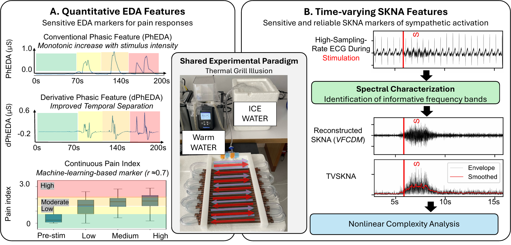
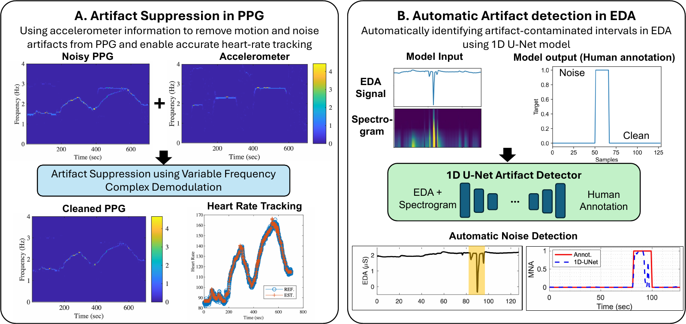
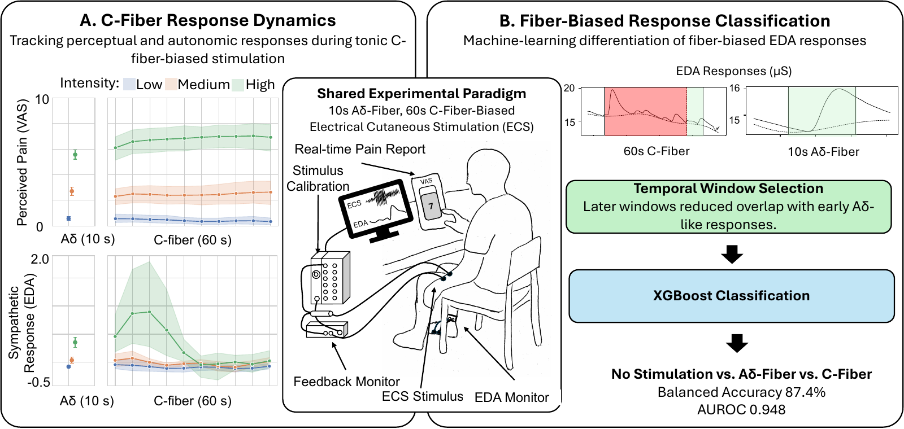
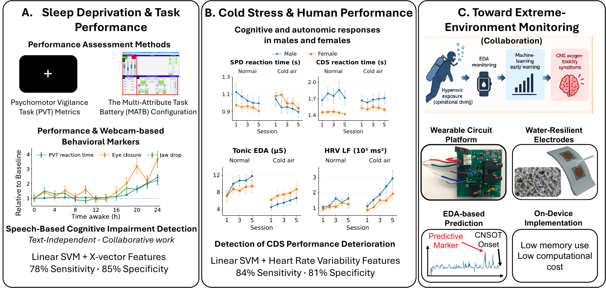

Youngsun Kong, Ph.D.
Postdoctoral Research Fellow (NIH NRSA F32), Biomedical Engineering
University of Connecticut, Storrs, CT
From Physiological Signals to Objective Human State Assessment
youngsun.kong.phd [at] gmail.com · CV · Google Scholar · GitHub · LinkedIn
Research
I develop computational frameworks that integrate signal processing, machine learning, and AI with controlled human studies to extract reliable and physiologically meaningful information from complex biosignals. My research spans robust physiological sensing, quantitative signal characterization, objective pain and nociception assessment, and human-state and performance monitoring under physiological and environmental stress.
Physiological Signal Characterization
I develop methods to extract sensitive and interpretable information from physiological recordings. This work examines how skin conductance and skin nerve activity change during controlled stimulation, turning raw signals into quantitative measures of autonomic and pain-related responses.

- Sensitive physiological indices of pain based on differential characteristics of electrodermal activity IEEE TBME, 2021 Co-first author
- Objective pain stimulation intensity and pain sensation assessment using machine learning classification and regression based on electrodermal activity Am J Physiol Regul Integr Comp Physiol, 2021 Co-first author
- A new approach to characterize dynamics of ECG-derived skin nerve activity via time-varying spectral analysis IEEE Trans Affective Computing, 2025 First author
- Complexity analysis of skin nerve activity for quantitative assessment of acute sympathetic nervous system activation Sensors, 2026 First author
Translational Pain Assessment
I use physiological signals to develop objective measures of pain-related responses during dental testing. This work progresses from distinguishing dental stimulation from stress using electrodermal activity (EDA) to combining multiple physiological signals and individual characteristics for more comprehensive pain assessment.
- Differentiating between stress- and EPT-induced electrodermal activity during dental examination Comput Biol Med, 2023 First author
- Multimodal dental pain detection (panel B) Under review, IEEE Trans Affective Computing First author
Robust Physiological Sensing
I develop methods that help physiological measurements remain useful when recordings contain movement-related interference or other noise. These approaches either suppress contamination to recover useful information or identify unreliable intervals before further analysis.

- Heart rate tracking using a wearable photoplethysmographic sensor during treadmill exercise IEEE Access, 2019 First author
- Automatic motion artifact detection in electrodermal activity signals using 1D U-net architecture Comput Biol Med, 2024 First author
Human Nociception and Pain Dynamics
I use controlled human experiments to examine how perceived pain and autonomic responses evolve during sustained stimulation. Related machine-learning work tests whether these physiological responses can distinguish stimulation conditions designed to preferentially engage different sensory nerve fibers.

- A tonic electrocutaneous stimulation paradigm for graded sensory C-fiber engagement in healthy subjects Front Pain Res, 2026 Co-first author
- Differentiation of peripheral nerve fiber activation through electrodermal activity in healthy adults Biocybern Biomed Eng, 2026 Co-first author
Human Performance Under Challenging Conditions
I investigate how prolonged wakefulness and cold exposure affect human performance, using behavioral measurements, physiological signals, and machine learning. Collaborative engineering projects extend this work toward wearable monitoring and early warning of physiological risk in extreme environments. All of this work is conducted in collaboration with the U.S. Navy.

- Facial features and head movements obtained with a webcam correlate with performance deterioration during prolonged wakefulness Atten Percept Psychophys, 2021 First author
- Multi-Attribute Task Battery configuration to effectively assess pilot performance deterioration during prolonged wakefulness Inform Med Unlocked, 2022 First author
- Sex differences in autonomic functions and cognitive performance during cold-air exposure and cold-water partial immersion Front Physiol, 2024 First author
- Detection of cognitive performance deterioration due to cold-air exposure in females using wearable electrodermal activity and electrocardiogram Biosensors, 2025 First author
- Acted sleepy speech vs. real sleepy speech: Human perception and machine prediction for sleepiness estimation Int J Hum-Comput Stud, 2026 Collaboration
- Design and validation of a multimodal wearable device for simultaneous collection of electrocardiogram, electromyogram, and electrodermal activity Sensors, 2022 Collaboration
- Prediction of central nervous system oxygen toxicity symptoms using electrodermal activity and machine learning Biocybern Biomed Eng, 2024 Collaboration
- Mechanically robust superhydrophobic coatings via dual-step deposition for electrodermal activity (EDA) electrodes immersible in saltwater Materials & Design, 2026 Collaboration
Education
- Ph.D., Biomedical Engineering — University of Connecticut 2022
- B.S. & M.S., Computer Science and Engineering — Soonchunhyang University 2015/2017
Academic Appointments
- Postdoctoral Research Fellow (NIH NRSA F32), University of Connecticut 2024–Present
- Postdoctoral Research Associate, University of Connecticut 2022–2024
Selected Grants & Funding
Awarded
- NIH/NIDCR Ruth L. Kirschstein Postdoctoral Individual NRSA (F32), Role: PI 2024–2027
- Defense Health Agency STTR Program, Phase II, Role: Co-I 2024–2026
Pending / Submitted
- NIH/NIDCR K99/R00 Pathway to Independence Award (submitted), Role: PI
- ONR/NIUVT (submitted), Role: Co-PI
Selected Awards
- YP Paper Competition Top 10 Finalist, IEEE EMBC 2025
- NIH Ruth L. Kirschstein Postdoctoral Individual NRSA (F32) 2024
- Best Paper Award, 3rd Place, IEEE-EMBS International Conference on Body Sensor Networks 2023
Selected Publications
44 peer-reviewed journal articles (18 as first author). Full list in CV or Google Scholar. (* denotes co-first authorship)
- *Kong, Y., *Peitzsch, A. G., McNaboe, R. Q., Chen, I. P., & Chon, K. H. (2026). A tonic electrocutaneous stimulation paradigm for graded sensory C-fiber engagement in healthy subjects. Frontiers in Pain Research, 7, 1779451.
- *Peitzsch, A. G., *Kong, Y., Mahjabin, M., & Chon, K. H. (2026). Differentiation of peripheral nerve fiber activation through electrodermal activity in healthy adults. Biocybernetics and Biomedical Engineering, 46(2), 290–299.
- Kong, Y., Baghestani, F., D’Angelo, W., Chen, I. P., & Chon, K. H. (2025). A new approach to characterize dynamics of ECG-derived skin nerve activity via time-varying spectral analysis. IEEE Transactions on Affective Computing.
- Kong, Y., & Chon, K. H. (2024). Electrodermal activity in pain assessment and its clinical applications. Applied Physics Reviews, 11(3).
- Kong, Y., Hossain, M. B., Peitzsch, A., Posada-Quintero, H. F., & Chon, K. H. (2024). Automatic motion artifact detection in electrodermal activity signals using 1D U-net architecture. Computers in Biology and Medicine, 182, 109139.
Teaching & Service
Teaching
-
Guest Lecturer, University of Connecticut
BME 6086, Advanced Biomedical Signal Processing · ENGR 1166, Foundations of AI: Machine Learning 2022–Present
Editorial & Review Service
- Associate Editor, Frontiers in Pain Research
- Associate Editor, IEEE Engineering in Medicine and Biology Conference (EMBC)
- Ad hoc reviewer: Nature Communications, IEEE Journal of Biomedical and Health Informatics, Scientific Reports, and others